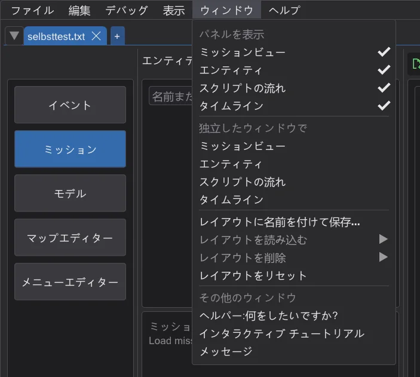
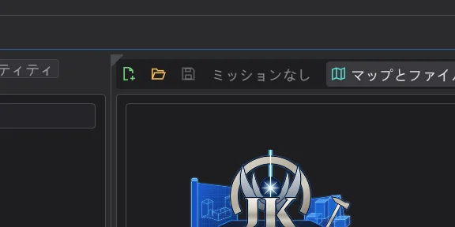
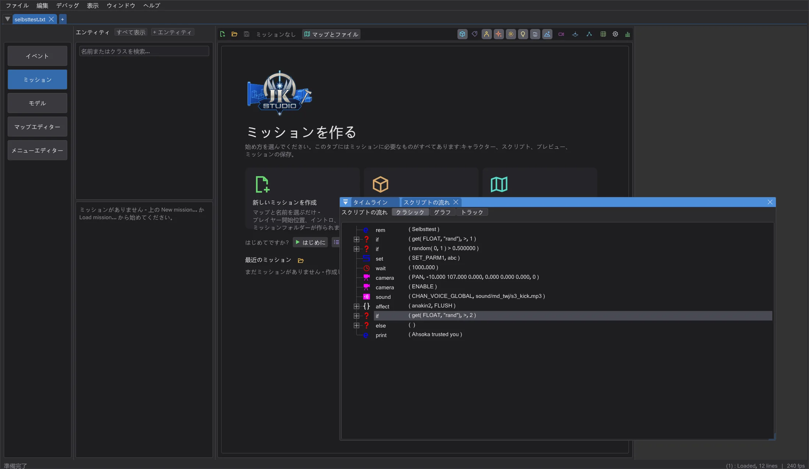
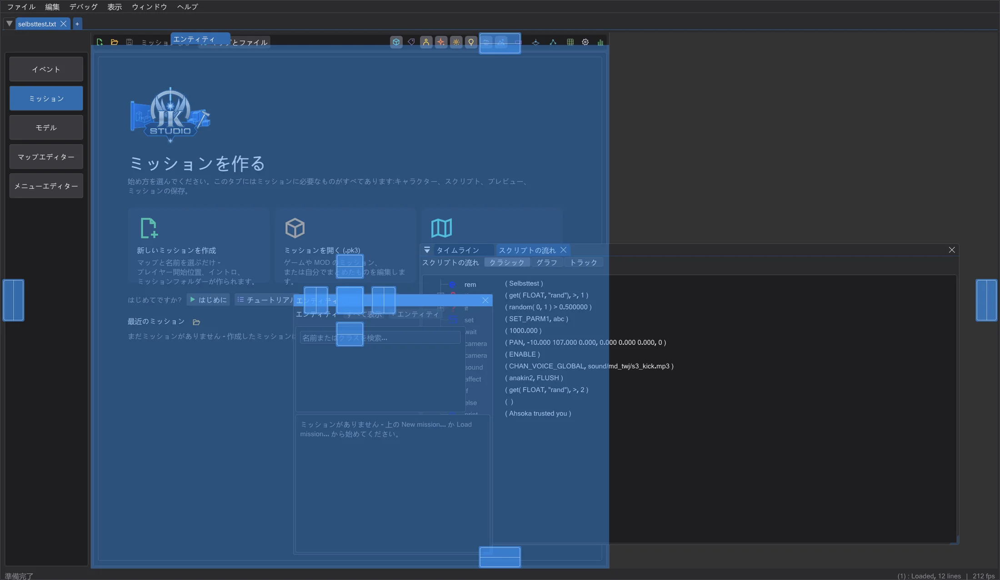

ウィンドウと画面の配置
どのパネルも好きな場所に置けます。メインウィンドウ内で別のパネルの横・下・タブとして、または 2 台目の画面の独立したウィンドウに。配置は領域ごとに名前を付けて保存できます。
各領域(イベント、ミッション、モデル、マップエディター、メニューエディター)は、メインウィンドウにドッキングされたパネルでできています。何も動かさない限り、各パネルは元の場所にあります。これが以前と 1 ピクセル単位で同じ、区切り線も同じ標準レイアウトです。
パネルを取り出す#

- 1
ウィンドウ メニュー(マップエディターでは NetRadiant のメニューの後ろ、最後のメニュー)を開き、独立したウィンドウで の下でパネル(たとえばタイムライン)をクリックします。独立したウィンドウになり、メインウィンドウでの場所は隣のパネルに譲られます。ミッションビューが高くなります。
- 2
またはパネルの左上の角を指すと、小さな三角形が表示されます。それをドラッグするとパネルが一緒に取り出されます。クリックすると代わりにパネルのタブが表示されます。
- 3
タイトルバーをつかんでウィンドウをメインウィンドウの外へドラッグすると、本物の Windows ウィンドウになり、2 台目の画面にも置けます。そこでも描画を続けます(3D ビューやマップエディターのリアルタイムライトも含む)。メインウィンドウと同じように、このウィンドウにもファイルをドラッグできます(たとえばモデルをマップエディターの XY ビューへ、.menu ファイルをメニューエディターのキャンバスへ)。

パネルを表示 でパネルを完全に隠せます。その場所も隣に譲られます。その他のウィンドウ の項目ではヘルパー、チュートリアル、メッセージを開きます(もともと独立したウィンドウです)。
パネルを組み合わせて好きな場所にドッキングする#

パネルのウィンドウを別のパネルの上へドラッグします(相手が独立したウィンドウでもメインウィンドウ内でも構いません)。マーカーが表示されます。中央のマーカーにドロップするとタブになり、矢印にドロップすると横・上・下に並びます。たとえば Script Flow をマップビューの下へ、エンティティのレイヤーをマップビューのタブへ、マップエディターのカメラを XY ビューの下へ移せます(Blender と同じです)。ドッキングしたパネル間の区切りはドラッグでき、タブは再びドラッグで取り出せます。同じ領域のパネル同士で使えます。検索などのダイアログは独立したままです。

パネルを元に戻す#
- ウィンドウの x で閉じます。パネルは元の場所に戻り、何も失われません。領域を並べ替えて元の場所がなくなっていれば、隣のパネルの横にドッキングし、あなたの配置はそのまま残ります。
- または 独立したウィンドウで の下のパネルをもう一度クリックします。
- またはメインウィンドウの好きな場所のマーカーにドロップします。
- レイアウトをリセット でその領域のすべてのパネルを標準レイアウトに戻します。
レイアウトの保存・読み込み・リセット#
領域ごとに独自のレイアウトがあります。レイアウトに名前を付けて保存 は各パネルの場所(メインウィンドウにドッキング、独立したウィンドウ、非表示)、それらのウィンドウの位置と画面、組み合わせ方を記憶します。レイアウトを読み込む で保存したレイアウトに切り替え、レイアウトを削除 で削除し、レイアウトをリセット でその領域のすべてのパネルを標準レイアウトに戻します。各領域の現在のレイアウトは設定に保存され、次回の起動時に復元されます。
画面が変わったとき#
- 画面を外したり配置を変えたりすると、その画面にあったウィンドウは元の大きさのままメインウィンドウの画面に戻ります。
- 画面がウィンドウより小さい場合、ウィンドウは収まるちょうどの大きさまで縮小されます。
- ウィンドウを拡大率の異なる画面(100%、150% など)へ移すと、大きさと文字がその画面の拡大率に合わせて変わります。
マップエディター#
NetRadiant のレイアウトが引き続き既定です(設定 > レイアウト)。Regular、Regular Left、Split(場所を自由に割り当てた場合や内蔵のエンティティウィンドウ付きも含む)には、それぞれ NetRadiant とまったく同じ大きさと区切り線の標準レイアウトがあり、ドラッグ、折りたたみ、Maximize view は NetRadiant と同じように動きます。取り出したビューは NetRadiant でビューを隠したときと同じく場所を隣に譲ります。独立したウィンドウのビューはメインウィンドウと同じ内容をすべて描画し、クリックするとアクティブなビューになり、ショートカットキーと自由視点はそのウィンドウで働きます(どの画面でも)。ビューを別の場所(たとえばカメラのタブ)にドッキングすると ImGui の区切り線になり、レイアウトをリセット で NetRadiant のレイアウトに戻ります。Floating ではビューはもともと浮いています。
メニューエディター#
メニューエディターの 2 つのレイアウトはどちらもパネルでできています。右側にタブがある場合は 単一の要素、キャンバス、階層・テキスト・プロパティ の列、テキストが下にある場合(設定)は階層付きのパレット、キャンバス、プロパティ、テキストエディター です。たとえばキャンバスを 2 台目の画面に大きく置き、テキストはメインウィンドウに残せます。
トラブルシューティング#
- パネルが見つからない、または配置が乱れた場合は、ウィンドウ > レイアウトをリセット でその領域の標準レイアウトに戻ります。
- メインウィンドウ内でのドッキングがお使いのコンピューターで問題を起こす場合は、環境変数
BHED_DOCKSPACE=0を付けて JK Studio を起動します(たとえばコマンドプロンプトでset BHED_DOCKSPACE=0と入力し、同じコマンドプロンプトからjkstudio.exeを起動)。すると各パネルは以前のバージョンと同じようにメインウィンドウ内の固定の場所に戻り、独立したウィンドウへの取り出しだけができます。パネルのウィンドウを元の場所で離すと元に戻ります。レイアウトは保持されます。